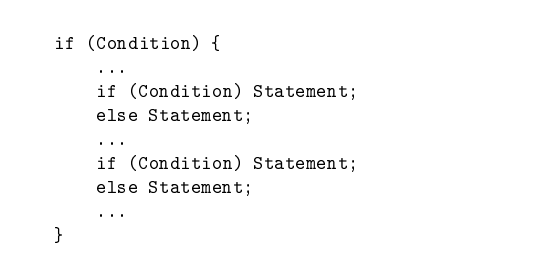
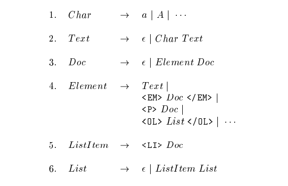

Context Free Grammar (CFG)/ Bahasa Bebas Konteks adalah sebuah tata bahasa dimana tidak terdapat pembatasan pada hasil produksinya. CFG mempunyai tujuan sama seperti halnya tata bahasa regular yaitu merupakan suatu cara untuk menunjukkan bagaimana menghasilkan suatu untai-untai dalam sebuah bahasa. Context-free grammars telah memainkan peran sentral dalam teknologi kompiler sejak tahun 1960-an. Mereka mengubah implementasi parser (fungsi yang menemukan struktur program) dari tugas implementasi ad-hoc yang memakan waktu menjadi pekerjaan rutin yang bisa dilakukan di sore hari. Baru-baru ini, tata bahasa bebas konteks telah digunakan untuk menggambarkan format dokumen, melalui apa yang disebut definisi tipe dokumen (DTD) yang digunakan dalam komunitas XML (bahasa markup yang dapat diperluas) untuk pertukaran informasi di Web.
Context-free grammar awalnya disusun oleh N. Chomsky sebagai cara untuk mendeskripsikan bahasa alami. Janji itu belum terpenuhi. Namun, karena penggunaan untuk konsep yang didefinisikan secara rekursif dalam Ilmu Komputer telah berlipat ganda, begitu pula kebutuhan CFG sebagai cara untuk menggambarkan contoh konsep ini. Akan dibuat sketsa dua kegunaan ini, satu lama dan satu baru.
1. Tata bahasa digunakan untuk mendeskripsikan bahasa pemrograman. Lebih penting lagi, ada cara mekanis untuk mengubah deskripsi bahasa sebagai CFG menjadi parser, komponen penyusun yang menemukan struktur program sumber dan merepresentasikan struktur tersebut dengan pohon parse. Aplikasi ini adalah salah satu penggunaan CFG yang paling awal, bahkan ini adalah salah satu cara pertama dimana ide-ide teoritis dalam Ilmu Komputer menemukan jalannya ke dalam praktik.
2. Perkembangan XML (Extensible Markup Language) diprediksikan secara luas akan memfasilitasi perdagangan elektronik dengan memungkinkan peserta untuk berbagi konvensi mengenai format pesanan, deskripsi produk, dan banyak jenis dokumen lainnya. Bagian penting dari XML adalah Document Type Definition (DTD), yang pada dasarnya adalah tata bahasa bebas konteks yang menjelaskan tag yang diizinkan dan cara tag ini dapat disarangkan. Tag adalah kata kunci yang familiar dengan tanda kurung segitiga yang mungkin Anda ketahui dari HTML, misalnya, < EM > dan < /EM > untuk mengelilingi teks yang perlu ditekankan. Namun, tag XML tidak berurusan dengan format teks, tetapi dengan arti teks. Misalnya, seseorang dapat mengelilingi rangkaian karakter yang dimaksudkan untuk ditafsirkan sebagai nomor telepon oleh < PHONE > dan < /PHONE >.
Banyak aspek bahasa pemrograman memiliki struktur yang dapat dijelaskan oleh ekspresi reguler. Namun, ada juga beberapa aspek yang sangat penting dari bahasa pemrograman tipikal yang tidak dapat direpresentasikan oleh ekspresi reguler saja.
Contohnya adalah perlakuan if dan else di C. Klausa if dapat tampak tidak seimbang dengan klausa else, atau mungkin diimbangi dengan klausa else yang cocok. Tata bahasa yang menghasilkan kemungkinan urutan if dan else (masing-masing diwakili oleh i dan e) adalah :
S ➝ ∈ | SS | iS | iSeS
Misalnya, ieie, iie, dan iei adalah kemungkinan urutan if dan else, dan masing-masing string ini dihasilkan oleh tata bahasa di atas. Beberapa contoh urutan ilegal, yang tidak dihasilkan oleh tata bahasa, adalah ei dan ieeii.

Misalnya, perhatikan iieie. Mencocokkan huruf e pertama dengan huruf i di kirinya menyisakan iie. Mencocokkan sisa e dengan i pada kirinya menyisakan i. Sekarang tidak ada lagi e, jadi tes berhasil. Kesimpulan ini juga masuk akal, karena urutan iieie sesuai dengan program C yang strukturnya seperti pada Gambar 5.10. Faktanya, algoritma pencocokan juga memberitahu kita (dan kompiler C) yang mana jika cocok dengan yang lain. Pengetahuan itu penting jika kompilator ingin membuat logika aliran kontrol yang dimaksudkan oleh pemrogram.
"String" dalam markup languages adalah dokumen dengan tanda tertentu (disebut tag) di dalamnya. Tag memberitahu kita sesuatu tentang semantik berbagai string di dalam dokumen. Bahasa markup yang mungkin paling Anda kenal adalah HTML (HyperText Markup Language). Bahasa ini memiliki dua fungsi utama: membuat hubungan antar dokumen dan mendeskripsikan format (“tampilan”) dari sebuah dokumen. Berikut ini adalah tampilan sederhana dari struktur HTML, tetapi contoh berikut harus menyarankan baik strukturnya dan bagaimana CFG dapat digunakan untuk mendeskripsikan dokumen HTML legal dan untuk memandu pemrosesan (yaitu, tampilan pada monitor atau printer) dari sebuah dokumen.

Gambar diatas adalah CFG yang mendeskripsikan struktur bahasa HTML.
> Dalam baris (1) disarankan bahwa karakter dapat berupa "a" atau "A" atau banyak kemungkinan karakter lain yang merupakan bagian dari kumpulan karakter HTML.
> Baris (2) mengatakan, dengan menggunakan dua produksi, Teks itu bisa berupa string kosong, atau karakter legal apa pun yang diikuti oleh lebih banyak teks.
> Baris (3) mengatakan bahwa dokumen adalah urutan dari nol atau lebih “elemen.”
> Sebuah elemen pada gilirannya, kita pelajari pada baris (4), bisa berupa teks, dokumen yang ditekankan, awal paragraf diikuti dengan dokumen, atau daftar. Ada juga produksi lain untuk Elemen, sesuai dengan jenis tag lain yang muncul di HTML.
> Kemudian, di baris (5) kita menemukan bahwa item daftar adalah tag < LI > diikuti dengan dokumen apa pun,
> dan baris (6) memberitahu kita bahwa daftar adalah urutan dari nol atau lebih elemen daftar.
Copyright © 2020 | Irfadiana Nurhasanah